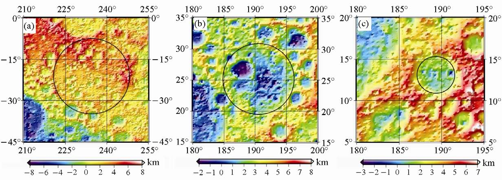
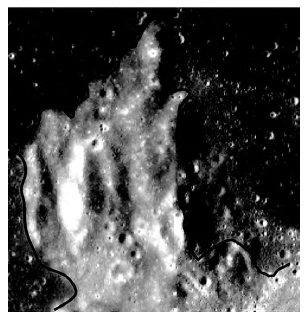

DEM在月球探测研究中的应用
“嫦娥工程”从我国2004年正式实施以来，已经取得了一系列重大的成就，而数字高程模型在月球地貌研究中也得到了应用，并为嫦娥三号在月球成功着陆奠定了基础。中国探月工程首席科学家、中科院院士欧阳自远提出中国探月有四大目标：一是获取月球表面三维立体影像；二是探测月球上14种有用元素资源的含量和分布；三是探测全月球土壤的厚度；四是探测地月空间环境。而对于这些目标，前三个的完成都离不开数字高程模型。
（1）月球数字高程模型的建立
月球表面三维立体影像的获取即是数字高程模型的建立。李春来，任兴等利用嫦娥一号月球探测器所得到的激光测距数据，经过使用移动曲面滤波法剔除无效数据和冗余数据、系统校正以及几何定位与高程结算后，采用规则格网模型，数据插值采用克里金算法，制作了全月球700米分辨率DEM。蔡占川也使用嫦娥一号卫星所获取的800万个激光测距点，采用相同方法得到了月球的数字高程模型，并与国际上的月球高程模型Clementime、ULCN-2005、CLTM-s01进行对比，结果说明蔡占川等得到的数字高程模型精度更高。（下图为李春来等制作的全月面DEM模型)

（2）月球地质与月貌的研究
月球地质和月貌的研究是研究月球各元素分布的前提。
撞击坑是月球表面最重要的地质单元，根据撞击坑的分布密度可对月表地质单元相对年龄进行估算。黄倩，平劲松等则利用根据嫦娥一号获取的激光高度数据点制作的月球数字高程模型CLTM-s01，对月球全球的重力场分布情况进行研究，从而确认了月球背部的一些撞击盆地进行了确认。王娇，程维明等在ArcGIS中以遥感影像辅助判断撞击坑位置，并使用DEM衍生的坡度和剖面曲率加权融合为底图，采用遥感图像处理与专家知识融合的智能化识别方式识别了全月表撞击坑，并建立数据库，使用DEM衍生的坡度、坡向等7个指标系统性的对撞击坑形态进行刻画，实现了对撞击坑数据的存储、检索、处理和应用，有效提高了数据管理、数据统计、空间分析的效率。(下图为黄倩等根据CLTM-s01揭示的月球背面地形)
丁孝忠等根据月球数字高程模型、嫦娥一号CCD影像数据以及干涉成像光谱数据，开展了虹湾-雨海地区区域地质综合研究。他们使用DEM对雨海盆地构造与虹湾和柏拉图月坑的掘积物的关系、地貌特征、线性构造与玄武质岩浆的侵入关系等进行了探讨，总结了该地区的地质构造演化历史，并应用ArcGIS编制了1:250万虹湾幅（LQ-4）地质图
对于月貌的研究方面，月陆和月海是月球上最主要的月貌单元，王琛智，汤国安等以DEM为基础，从DEM纹理角度出发，利用灰度共生矩阵模型对典型的月海和月陆进行了量化，结果反映出月海较月陆质地均匀、纹理不突出；而月陆地形复杂、纹理明显且蕴含信息量大。基于月海和月陆纹理上的差异，他们提出了利用DEM纹理特征，自动识别月貌的的方法，避免了因子权重选择的主观性。（左图为王琛智等测试样区月海和月陆边缘示意图）
（3）月球土壤厚度的研究计算
月球表面土壤的厚度研究是人类探索月球的另一项重要目标，对于估算月球氮3的含量至关重要。而反演月壤厚度需要建立准确的微波辐射亮温模型，在月球表面亮温模型建设方面，蒋夏在已有的月表亮度温度模型的基础上，加入了数字地形模型，从而引入了由于地势起伏造成的遮蔽、坡度坡向、以及地形修正后的太阳辐照度、入射角、亮温发射角等因子提出了新的亮温模型。
（4）总结
我们对月球的探索才刚刚开始，随着科技的发展与行星探测计划的进一步展开，月球的数字高程模型会更加详细和精确。作为了解月球最直观的表现形式，数字高程模型在月球探测中的应用也会更加广泛和深入，并为中国人的首次登月奠定基础。
(5) 参考文献
[1] 龙吉泽. 中国实施探月工程的四大科学目标[J]. 湖南农机. 2013(12)
[2] 李春来,任鑫,等.嫦娥一号激光测距数据及全月球DEM模型[J].中国科学:地球科学.
2010 (03)
[3] 李春来,刘建军,等.嫦娥一号图像数据处理与全月球影像制图[J].中国科学:地球科学.
2010 (03)
[4] 蔡占川,梁延研,等.基于嫦娥一号卫星激光测高数据的月球数字高程模型[J].地球物理学进展. 2010(04)
[5] 何姝珺,陈建平,等.月表典型区撞击坑形态分类及分布特征[J].地学前缘. 2012(06)
[6] 黄倩,平劲松,等. 嫦娥一号CLTM-s01模型揭示和证认的月球地形新特征[J].中国科学(G辑:物理学 力学 天文学). 2009(10)
[7] 王娇,程维明,周成虎,赵敏.全月球撞击坑形貌特征的识别与多指标表达[J]. 地理研究. 2014(07)
[8] 丁孝忠,韩坤英,等.月球虹湾幅(LQ-4)地质图的编制[J].地学前缘. 2012(06)
[9] 王琛智,汤国安,袁赛,孙建伟,刘凯.基于DEM纹理特征的月貌自动识别方法探究[J].地球信息科学学报. 2015(01)
[10] 蒋夏.基于DEM的月表亮温模拟的研究[D].华中科技大学.2012